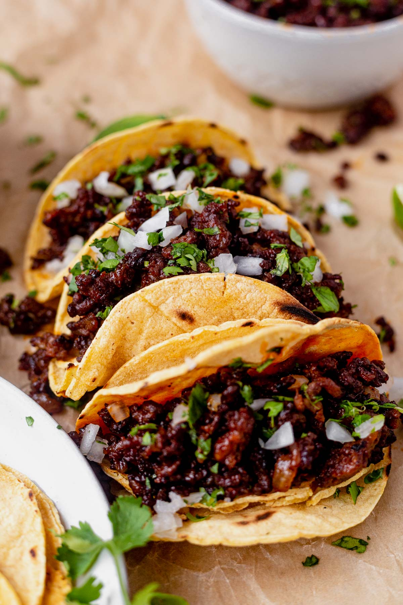

Chorizo Tacos

Homemade chorizo tacos with onions and cilantro on toasted corn tortillas
I discovered these tacos at a Mexican taco stand and learned how to cook them at home using easy to find ingredients.
Ingredients
- 1/2 lb chorizo
- 1/2 medium-sized onion
- 1/3 cup cilantro
- 3 white corn tortillas
- 3 teaspoons jalapeño or guacamole based hot sauce
Steps
- Slice a medium-sized onion into 2 halves. Cut one half of the onion into small pieces and set aside. Store the remaining half.
- Slice cilantro and set aside
- Place 1/2 lb chorizo and onion in a medium-sized pan
- Cook at medium heat until chorizo is slightly blackened
- Add cilantro and stir
- Immediately remove chorizo mix and set aside
- Place 3 white corn tortillas in pan. Cook both sides until slightly crispy
- Place tortillas on plate and serve chorizo mix on top of each tortilla
- Include hot sauce as a side